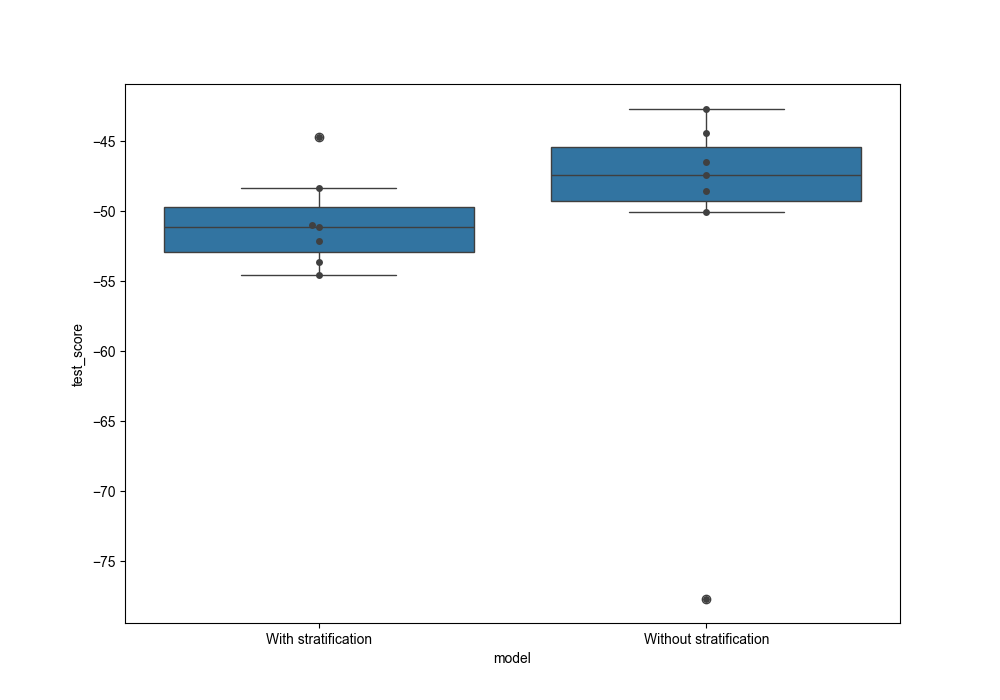

Note
Go to the end to download the full example code.
Stratified K-fold CV for regression analysis
This example uses the ‘diabetes’ data from sklearn datasets to perform stratified Kfold CV for a regression problem,
# Authors: Shammi More <s.more@fz-juelich.de>
# Federico Raimondo <f.raimondo@fz-juelich.de>
#
# License: AGPL
import math
import pandas as pd
import seaborn as sns
import matplotlib.pyplot as plt
from sklearn.datasets import load_diabetes
from sklearn.model_selection import KFold
from julearn import run_cross_validation
from julearn.utils import configure_logging
from julearn.model_selection import StratifiedGroupsKFold
Set the logging level to info to see extra information
configure_logging(level='INFO')
2026-05-29 20:45:56,088 - julearn - INFO - ===== Lib Versions =====
2026-05-29 20:45:56,088 - julearn - INFO - numpy: 1.23.1
2026-05-29 20:45:56,088 - julearn - INFO - scipy: 1.10.1
2026-05-29 20:45:56,088 - julearn - INFO - sklearn: 1.0.2
2026-05-29 20:45:56,089 - julearn - INFO - pandas: 2.0.3
2026-05-29 20:45:56,089 - julearn - INFO - julearn: 0.2.5
2026-05-29 20:45:56,089 - julearn - INFO - ========================
load the diabetes data from sklearn as a pandas dataframe
features, target = load_diabetes(return_X_y=True, as_frame=True)
Dataset contains ten variables age, sex, body mass index, average blood pressure, and six blood serum measurements (s1-s6) diabetes patients and a quantitative measure of disease progression one year after baseline which is the target we are interested in predicting.
print('Features: \n', features.head())
print('Target: \n', target.describe())
Features:
age sex bmi bp s1 s2 s3 s4 s5 s6
0 0.038076 0.050680 0.061696 0.021872 -0.044223 -0.034821 -0.043401 -0.002592 0.019908 -0.017646
1 -0.001882 -0.044642 -0.051474 -0.026328 -0.008449 -0.019163 0.074412 -0.039493 -0.068330 -0.092204
2 0.085299 0.050680 0.044451 -0.005671 -0.045599 -0.034194 -0.032356 -0.002592 0.002864 -0.025930
3 -0.089063 -0.044642 -0.011595 -0.036656 0.012191 0.024991 -0.036038 0.034309 0.022692 -0.009362
4 0.005383 -0.044642 -0.036385 0.021872 0.003935 0.015596 0.008142 -0.002592 -0.031991 -0.046641
Target:
count 442.000000
mean 152.133484
std 77.093005
min 25.000000
25% 87.000000
50% 140.500000
75% 211.500000
max 346.000000
Name: target, dtype: float64
Let’s combine features and target together in one dataframe and create some outliers to see the difference in model performance with and without stratification
data_df = pd.concat([features, target], axis=1)
# Create outliers for test purpose
new_df = data_df[(data_df.target > 145) & (data_df.target <= 150)]
new_df['target'] = [590, 580, 597, 595, 590, 590, 600]
data_df = pd.concat([data_df, new_df], axis=0)
data_df = data_df.reset_index(drop=True)
# define X, y
X = ['age', 'sex', 'bmi', 'bp', 's1', 's2', 's3', 's4', 's5', 's6']
y = 'target'
/private/var/folders/09/t22x2_p106j7p24khr0jdxrw0000gn/T/tmptaxngwlm/examples/basic/plot_stratified_kfold_reg.py:52: SettingWithCopyWarning:
A value is trying to be set on a copy of a slice from a DataFrame.
Try using .loc[row_indexer,col_indexer] = value instead
See the caveats in the documentation: https://pandas.pydata.org/pandas-docs/stable/user_guide/indexing.html#returning-a-view-versus-a-copy
new_df['target'] = [590, 580, 597, 595, 590, 590, 600]
Define number of splits for CV and create bins/group for stratification
num_splits = 7
num_bins = math.floor(len(data_df) / num_splits) # num of bins to be created
bins_on = data_df.target # variable to be used for stratification
qc = pd.cut(bins_on.tolist(), num_bins) # divides data in bins
data_df['bins'] = qc.codes
groups = 'bins'
Train a linear regression model with stratification on target
cv_stratified = StratifiedGroupsKFold(n_splits=num_splits, shuffle=False)
scores_strat, model = run_cross_validation(
X=X, y=y, data=data_df, preprocess_X='zscore', cv=cv_stratified,
groups=groups, problem_type='regression', model='linreg',
return_estimator='final', scoring='neg_mean_absolute_error')
2026-05-29 20:45:56,125 - julearn - INFO - ==== Input Data ====
2026-05-29 20:45:56,125 - julearn - INFO - Using dataframe as input
2026-05-29 20:45:56,126 - julearn - INFO - Features: ['age', 'sex', 'bmi', 'bp', 's1', 's2', 's3', 's4', 's5', 's6']
2026-05-29 20:45:56,126 - julearn - INFO - Target: target
2026-05-29 20:45:56,127 - julearn - INFO - Expanded X: ['age', 'sex', 'bmi', 'bp', 's1', 's2', 's3', 's4', 's5', 's6']
2026-05-29 20:45:56,127 - julearn - INFO - Expanded Confounds: []
2026-05-29 20:45:56,128 - julearn - INFO - Using bins as groups
2026-05-29 20:45:56,129 - julearn - INFO - ====================
2026-05-29 20:45:56,129 - julearn - INFO -
2026-05-29 20:45:56,129 - julearn - INFO - ====== Model ======
2026-05-29 20:45:56,129 - julearn - INFO - Obtaining model by name: linreg
2026-05-29 20:45:56,129 - julearn - INFO - ===================
2026-05-29 20:45:56,129 - julearn - INFO -
2026-05-29 20:45:56,130 - julearn - INFO - Using scikit-learn CV scheme StratifiedGroupsKFold(n_splits=7, random_state=None, shuffle=False)
/private/var/folders/09/t22x2_p106j7p24khr0jdxrw0000gn/T/tmptaxngwlm/.venv/lib/python3.8/site-packages/sklearn/model_selection/_split.py:676: UserWarning: The least populated class in y has only 1 members, which is less than n_splits=7.
warnings.warn(
Train a linear regression model without stratification on target
2026-05-29 20:45:56,286 - julearn - INFO - ==== Input Data ====
2026-05-29 20:45:56,287 - julearn - INFO - Using dataframe as input
2026-05-29 20:45:56,287 - julearn - INFO - Features: ['age', 'sex', 'bmi', 'bp', 's1', 's2', 's3', 's4', 's5', 's6']
2026-05-29 20:45:56,287 - julearn - INFO - Target: target
2026-05-29 20:45:56,287 - julearn - INFO - Expanded X: ['age', 'sex', 'bmi', 'bp', 's1', 's2', 's3', 's4', 's5', 's6']
2026-05-29 20:45:56,287 - julearn - INFO - Expanded Confounds: []
2026-05-29 20:45:56,288 - julearn - INFO - ====================
2026-05-29 20:45:56,289 - julearn - INFO -
2026-05-29 20:45:56,289 - julearn - INFO - ====== Model ======
2026-05-29 20:45:56,289 - julearn - INFO - Obtaining model by name: linreg
2026-05-29 20:45:56,289 - julearn - INFO - ===================
2026-05-29 20:45:56,289 - julearn - INFO -
2026-05-29 20:45:56,290 - julearn - INFO - Using scikit-learn CV scheme KFold(n_splits=7, random_state=None, shuffle=False)
Now we can compare the test score for model trained with and without stratification. We can combine the two outputs as pandas dataframes
scores_strat['model'] = 'With stratification'
scores['model'] = 'Without stratification'
df_scores = scores_strat[['test_score', 'model']]
df_scores = pd.concat([df_scores, scores[['test_score', 'model']]])
Plot a boxplot with test scores from both the models. We see here that the variance for the test score is much higher when CV splits were not stratified

Total running time of the script: (0 minutes 10.063 seconds)